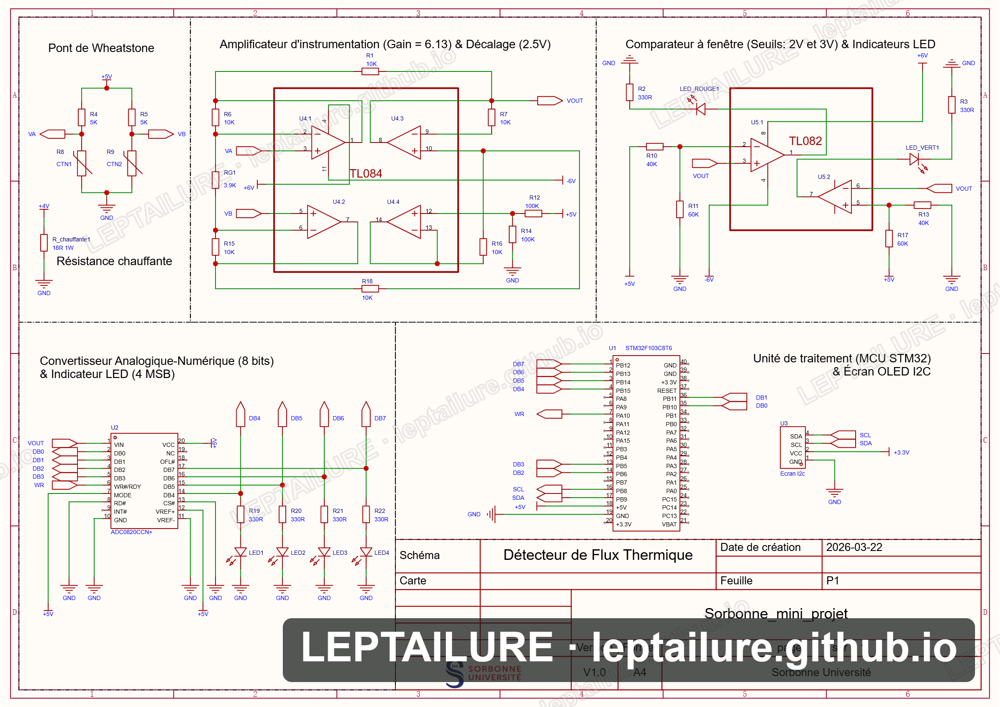
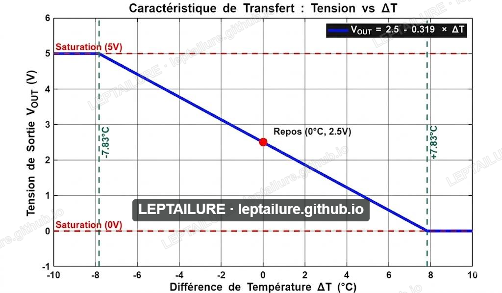
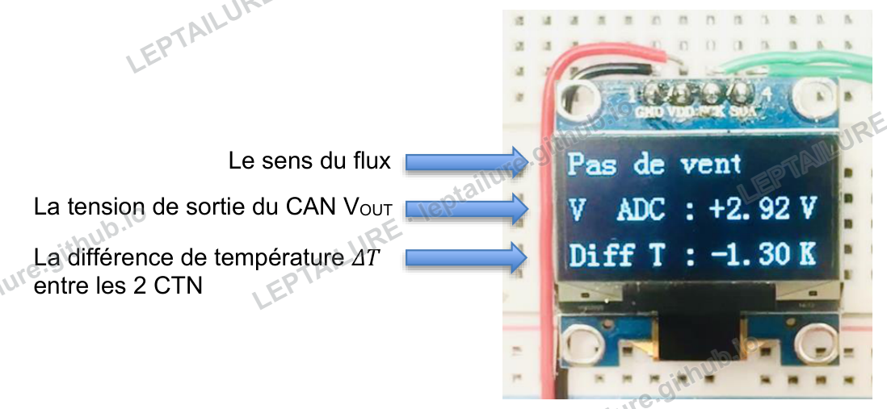
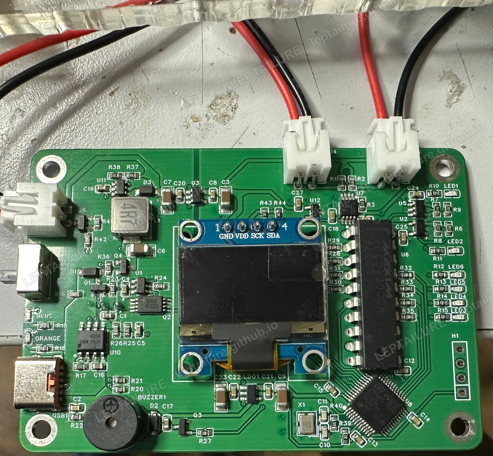
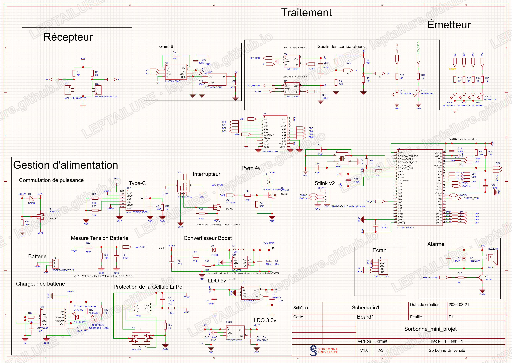

Détecteur de flux d’air
Du pont de mesure à l’affichage embarqué : détecter le sens d’un flux et exploiter le signal sur STM32.
Le projet associe des thermistances CTN en pont de Wheatstone, des comparateurs et une indication par LED. Une extension personnelle ajoute l’acquisition numérique, le traitement sur microcontrôleur et un écran OLED.
CTN · Pont de Wheatstone · CAN externe · STM32 · I²C / OLED
- Cadre
- Projet d’électronique · L2
- Fonction
- Détection du sens d’un flux d’air
- Extension personnelle
- Acquisition et affichage sur STM32
01 / Transformer une variation en indication
Le pont de Wheatstone convertit les variations de résistance des CTN en une tension différentielle. Cette tension constitue le point de départ de la chaîne : elle peut être comparée pour donner une indication lumineuse ou numérisée pour être traitée et affichée.
Comparateurs → LED
Indication directe du sens du flux.
CAN externe → STM32 → OLED
Acquisition, traitement et affichage via I²C.
02 / Le projet de cours
CTN et pont de Wheatstone
La partie capteur repose sur des thermistances à coefficient de température négatif. Le montage en pont permet d’exploiter une différence entre les branches plutôt qu’une résistance isolée.
Comparateurs et indication du sens
Les comparateurs convertissent l’information analogique en états de sortie pour les LED. Cette voie donne une indication directe du sens du flux, sans passer par un affichage logiciel.
03 / Mon extension sur STM32
J’ai prolongé le montage par une chaîne embarquée associant un convertisseur analogique-numérique externe, un STM32 et un écran OLED. Cette extension porte sur l’acquisition des données, leur traitement et leur présentation sur l’écran via I²C.
Acquérir et traiter
Le convertisseur fait le lien entre le signal du montage et le programme du microcontrôleur. Le STM32 assure ensuite l’exploitation des données numériques.
Rendre l’information lisible
L’écran OLED ajoute une interface de lecture au système. Sa commande par I²C relie la programmation embarquée à un périphérique d’affichage.
Prototype sur plaque d’essai



Caractéristiques, nomenclature et fonctions de transfert
Datasheet (Caractéristiques Principales)
| Paramètre | Valeur / Description |
|---|---|
| Température ambiante de fonctionnement | 25 °C ± 5 °C |
| Puissance DC consommée | 250 mW |
| Plage de ΔT mesurable (Différence thermique entre sondes TCTN2 − TCTN1) | ± 7,83 °C |
| ΔT Minimal détectable | Sur 4 bits : 0,5 °C Sur 8 bits : 0,06 °C |
| Incertitude sur ΔT | Sur 4 bits : ± 0,49 °C Sur 8 bits : ± 0,03 °C |
| Relation : ΔT en fonction de la sortie analogique (VOUT) | ΔT = (2,5 − VOUT) / 0,319 [°C] |
| Relation : ΔT en fonction de la sortie numérique (D, code décimal du CAN) |
Sur 4 bits : Sur 8 bits : |
| Signal lumineux indiquant le sens du flux |
Flux Gauche → Droite : LED Verte Flux Droite → Gauche : LED Rouge Pas de flux : LED éteintes |
| Taille du circuit (hors tube) | 16 cm × 11 cm |
| Coût des composants | 20 € |
| Délai d'approvisionnement en composants | 30 jours |
Note : L'acquisition native se fait sur 8 bits. L'application d'un masque logiciel (Bitmask) permet d'extraire les 4 MSB (Mode 4 bits sélectionnable en option) pour une synchronisation avec l'affichage LED.
Valeurs Limites Absolues (À ne pas dépasser)
- Alimentation numérique (CAN, MCU, etc.) : 5,0 V strict (Risque de destruction si > 5 V).
- Alimentation symétrique (AOP TL082 / TL084) : Comprise entre ±6,0 V (minimum pour la linéarité) et ±18,0 V (maximum absolu).
- Alimentation résistance chauffante : ≤ 4,0 V (Pour ne pas dépasser la limite de 1 W).
Nomenclature (BOM)
| Repère | Quantité | Description / Valeur | Fabricant |
|---|---|---|---|
| U1 | 1 | STM32F103C8T6 | STMicroelectronics |
| U2 | 1 | ADC0820CCN+ | Texas Instruments |
| U3 | 1 | Écran I2C | Générique |
| U4 | 1 | TL084IDR | Texas Instruments |
| U5 | 1 | TL082CDR | Texas Instruments |
| LED1~LED4 | 4 | LED Jaune | Générique |
| LED_ROUGE1 | 1 | LED Rouge | Générique |
| LED_VERTE1 | 1 | LED Verte | Générique |
| R8, R9 | 2 | CTN (5 kΩ, β=3700K, Max 75 mW) | Générique |
| R_chauffante1 | 1 | Résistance chauffante 18 Ω (1W) | Générique |
| RG1 | 1 | 3,9 kΩ | Générique |
| R4, R5 | 2 | 5 kΩ | Générique |
| R1, R6, R7, R15, R16, R18 | 6 | 10 kΩ | Générique |
| R10, R13 | 2 | 40 kΩ | Générique |
| R11, R17 | 2 | 60 kΩ | Générique |
| R12, R14 | 2 | 100 kΩ | Générique |
| R2, R3, R19~R22 | 6 | 330 Ω | Générique |
| – | 1 | Platine d'essai & Fils de connexion | Générique |
Fonctions de Transfert et Équations
Tension du pont (Développement limité sur la température)
La variation de température ΔT est définie comme la différence thermique entre les deux sondes (TCTN2 − TCTN1), cette valeur étant proportionnelle au flux d'air traversant le dispositif. Autour de T0 = 298 [K] ≈ 25 [°C], la tension différentielle s'exprime par :
VB − VA ≈ (−5 × β) / (4 × T0²) × ΔT
Où VA et VB sont les tensions aux bornes du pont de Wheatstone, la tension d'alimentation du pont est 5V, β est la constante de la thermistance CTN, β=3700K.
Gain, Sensibilité et Numérisation
L'amplificateur d'instrumentation possède un gain G :
G = 1 + 20 kΩ / 3,9 kΩ ≈ 6,128
Avec un décalage (offset) de 2,5 V, la tension de sortie s'écrit :
VOUT = G × (VB − VA) + 2,5
La sensibilité globale du système S est définie par :
S = [G × (VB − VA)] / ΔT ≈ −0,319 [V/°C]
En fonction de la valeur numérique D lue par le MCU, la différence de température se calcule comme suit :
ΔT = [2,5 − (D × pas de quantification)] / 0,319 [°C] (1 °C de variation = 1 K)
Où le pas de quantification est de 0,0195V (8 bits) ou 0,3125V (4 bits).




Circuit imprimé et carte assemblée
Le circuit imprimé réunit la mesure différentielle, l’acquisition sur STM32 et l’affichage OLED. Le schéma détaille aussi la charge et la protection de la batterie Li‑Po, l’alimentation USB‑C et la commande du buzzer.





04 / Du circuit au système embarqué
Ce projet relie capteurs résistifs, électronique analogique, conversion numérique et programmation sur STM32. L’extension personnelle conserve la chaîne de mesure comme point de départ et lui ajoute une exploitation logicielle.
Détecter un sens et mesurer une vitesse
L’indication du sens du flux est la fonction présentée ici. Une mesure quantitative de vitesse demanderait en plus une calibration reliant le signal électrique à une grandeur de référence.